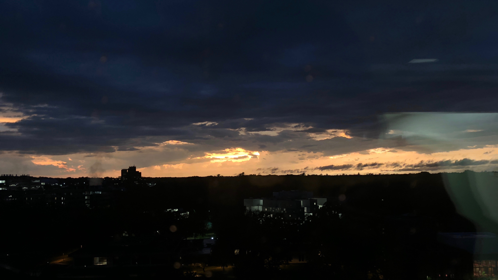

Week 09
 My view after the hurricane– it was only 7pm!
This week, lots happened inside and outside the lab. I got back to work, wrapped up my personal project, got sick, and I experienced my first hurricane warning. The weather was awful for a few hours, but thankfully it just passed through. I was also indoors the whole time, and we were just directed to find lowest ground and wait it out. I also got a nice picture of the sky afterwards!
Getting sick really hindered my development which was hard to accept this week, especially being my second to last week in Iowa and my project needs to get evaluated by others. I spent then usual amount of time in lab but things were moving much slower and progress became so much more difficult. Kyle was able to test out my project remotely as she was in Mountain View for the week and gave me really valuable feedback. So even though I wasn’t able to keep adding new features, I feel that my code is much more robust and what I currently have has been able to improve a lot.
Next week is my final week! I will mostly be working on my project report, which I’ll link on this website when I’m done. I cannot believe how fast this summer went by, and I’m sad that I’ll have to leave the friends I’ve made in this short time.